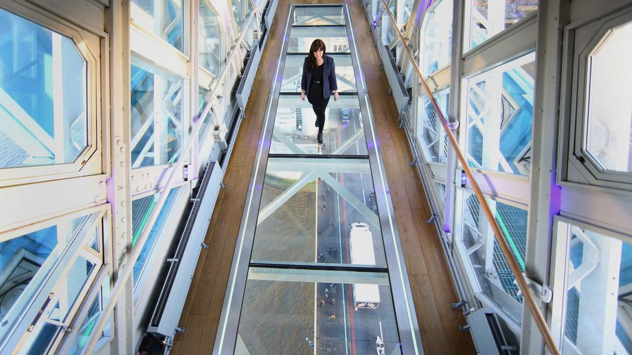
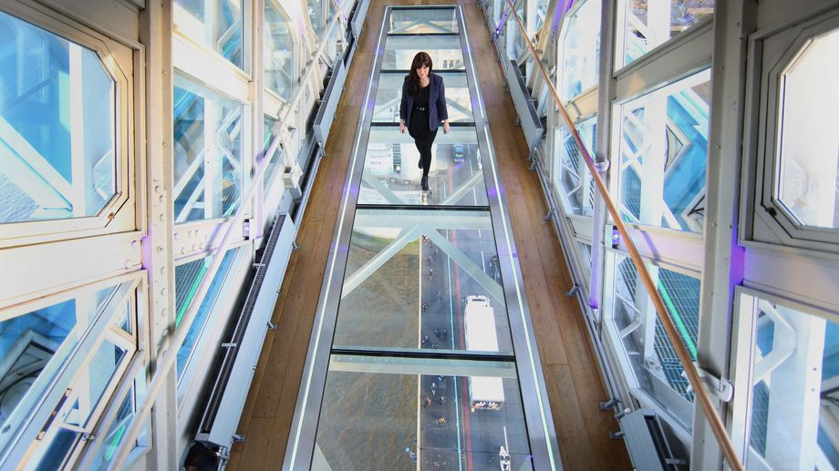

Besichtigung
Die Brücke kann besichtigt werden – inklusive Maschinenhaus und verglastem Gehweg mit Blick auf die Skyline.
Durch das Glas am Boden kann man nach unten auf den Verkehr blicken
Die Brücke kann besichtigt werden – inklusive Maschinenhaus und verglastem Gehweg mit Blick auf die Skyline.
Durch das Glas am Boden kann man nach unten auf den Verkehr blicken
